Claude Code 세션을 아이소메트릭 사무실로 보여주는 로컬 뷰어
터미널에서 돌아가는 Claude Code 세션들이 훅(hook) 이벤트를 보내면, 세션마다 캐릭터 한 명이 사무실에서 실시간으로 움직입니다. 파일을 읽으면 자료실, 명령을 돌리면 서버실, 질문이 생기면 내 자리에서 손을 듭니다. git 프로젝트마다 층이 하나씩 생깁니다. 웹 버전은 npm 과 Homebrew 로, 맥·Windows 앱은 GitHub Release 와 Homebrew 로 배포되고 앱은 스스로 업데이트합니다.
1. 한눈에
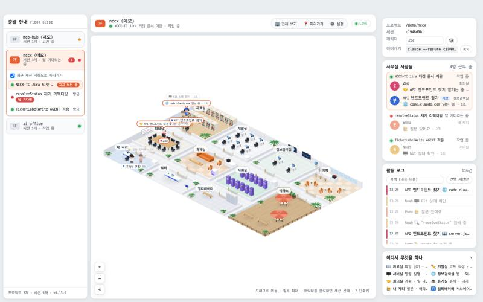
기술 스택
- 서버
- Node.js 18+ ·
http표준 모듈만 · 상태 머신 + JSONL 저널 · SSE 푸시 - 프런트
- 바닐라 ES 모듈 · Canvas 2D 아이소메트릭 렌더러(빌드 없음, 번들러 없음) · 폰트 D2Coding + NanumSquare
- 데스크톱 앱
- Tauri 2 (Rust) 메뉴바·트레이 앱 · macOS(Apple Silicon)·Windows(x64) · Node 22.12 사이드카 번들 · tauri-plugin-updater 자동 업데이트(서명 검증)
- 입력
- Claude Code 훅 11종 등록 (
~/.claude/settings.json,hooks/emit.js가 POST). 상태 머신은 TaskCompleted 까지 12종을 처리 - 배포
- npm
claude-ai-office· Homebrew tapcozyuj/tap(caskai-office, formulaclaude-ai-office) · GitHub Release(DMG·NSIS·latest.json, 고정 이름 링크) - CI
- GitHub Actions: push·PR 마다 Ubuntu·Windows·macOS 테스트, 태그
v*마다 맥·Windows 앱 빌드·서명·릴리스 + Windows 설치 스모크 - 화면 언어
public/js/i18n.js: 한국어 원문 + 영어 사전·패턴 규칙, DOM 은 MutationObserver, 캔버스는tr()- 테스트
node --test100개: 상태 머신, 경로 탐색, 깊이 정렬, 저널, CLI, 서버 통합, 번역, 프런트 스모크(가짜 캔버스·DOM)
2. 시스템 구성도
세 프로세스가 있습니다. Claude Code(여러 터미널)가 훅마다 짧은 Node 프로세스(emit.js)를 띄워 이벤트를 서버에 POST 하고, 서버 한 개가 상태를 들고 브라우저(또는 Tauri 창)에 SSE 로 밀어 줍니다. 데스크톱 앱(맥·Windows)은 서버를 자식으로 띄우고 메뉴바·트레이에 상태를 보여 주는 껍데기이며, GitHub Release 의 latest.json 을 보고 스스로 업데이트합니다.
포트는 기본 4777 하나입니다. 서버가 이미 떠 있으면 앱과 CLI 는 새로 띄우지 않고 재사용하고, 훅 명령에 적힌 --port 와 서버 포트가 다르면 서버 기동 로그와 화면 배너가 경고합니다(lib/hookport.js).
3. 데이터 흐름
훅 → 서버
Claude Code 는 훅마다 "/path/node" "/path/hooks/emit.js" 를 실행하고 stdin 으로 JSON 을 넘깁니다. emit.js 는 그 바이트를 그대로 POST /hook 하고 1초 안에 끝냅니다. 서버가 없어도 항상 exit 0 이라 Claude Code 의 흐름을 막지 않습니다. 서버는 본문을 파싱한 뒤 먼저 204 를 보내고 상태를 갱신합니다(훅 쪽은 응답 내용을 쓰지 않습니다).
Claude Code ──(stdin JSON)──▶ emit.js ──POST /hook──▶ server.js
├─ state.apply(payload, now) # 상태 전이
├─ journal.append(now, slim) # 데모 제외
└─ broadcast('update' | 'remove' | 'floor') # SSE서버 → 브라우저
GET /events 는 Server-Sent Events 입니다. 접속 직후 snapshot(전체 상태) 한 번, 그 뒤로는 바뀐 세션만 update, 사라지면 remove, 층 이름·프리셋이 바뀌면 floor, 데모 on/off 는 demo. 클라이언트 store.js 가 같은 모양으로 미러링하고, 패널은 DOM 을 다시 그리고 캔버스는 다음 프레임에 캐릭터 목표를 갱신합니다.
저널과 복구
훅 payload 는 큰 필드(tool_response, 긴 프롬프트)를 잘라낸 slim 형태로 ~/.ai-office/events.jsonl 에 1초 단위로 flush 됩니다. 서버를 다시 켜면 최근 2시간치를 그대로 다시 흘려 상태를 복원하고, 1시간마다 오래된 줄을 정리합니다(ai-office compact 로 즉시 가능). 데모 이벤트는 저널에 남기지 않습니다.
층 = git 프로젝트
lib/project.js 가 cwd 에서 위로 올라가며 .git 을 찾아 저장소 루트를 층 id 로 씁니다. worktree 는 원래 저장소로 묶이므로 같은 층에 보이고, 브랜치 이름은 HEAD 파일을 읽어 세션 옆에 ⎇ 태그로 붙습니다. git 을 실행하지 않습니다.
4. 백엔드 모듈
| 파일 | 역할 | 핵심 포인트 |
|---|---|---|
server.js | HTTP·SSE·정적 파일·데모 자식·저널 연결 | 의존성 없음. /hook 은 먼저 204. AI_OFFICE_WATCH_PARENT 가 있으면 부모 pid 를 2초마다 확인해 사라지면 종료(앱·CLI 강제 종료 대비) |
lib/state.js | 상태 머신 | floors → sessions → agents. 훅 12종 처리(11종 등록 + TaskCompleted), 서브에이전트 agent_id 매칭, pendingSubagents 큐로 Agent 도구 description 과 SubagentStart 짝짓기, sweep(): 30분 자리 비움·transcript mtime 으로 퇴근 감지·2시간 TTL, 층 이름 충돌 시 상위 경로로 구분 |
lib/normalize.js | 도구 → 방·활동·말풍선·아이콘 | Read/Grep/Glob → 자료실, Edit/Write → 개발실, Bash → 서버실, Web*/MCP → 정보검색실, Agent/Todo/Plan → 회의실, AskUserQuestion → 내 자리. 시스템 프롬프트(<task-notification>)는 요청으로 치지 않음 |
lib/project.js | cwd → 저장소 루트·이름·브랜치·worktree | .git 파일(worktree)이면 gitdir: 을 따라가 본 저장소로 |
lib/journal.js | JSONL 저널 | slim 페이로드, 1초 flush, 2시간 창 replay, 1시간 compact, 20MB 상한 |
lib/floorStyle.js | 층 인테리어 프리셋 배정 | 층 id 해시 + 아직 안 쓰인 프리셋 우선, 직접 선택은 floor-styles.json 에 저장해 모든 브라우저가 같은 층을 봄 |
lib/hookport.js | settings.json 의 훅 명령에서 포트 읽기 | 포트 불일치 경고의 근거 |
hooks/emit.js | 훅 → POST | 표준 http, 1초 타임아웃, 항상 exit 0 |
scripts/install-hooks.js | 훅 등록/제거 | 멱등. --app-dir, --node, --port. 우리 훅만 골라 교체 |
scripts/demo.js | 가짜 세션 생성기 | /demo/ cwd 로 실제 훅 흐름을 재현. 서버가 자식으로 띄우고 끄면 세션을 정리 |
HTTP API
| 메서드·경로 | 설명 |
|---|---|
POST /hook | Claude Code 훅 payload. 204 즉시 응답 후 처리. 데모가 꺼진 상태의 /demo/ 이벤트는 무시 |
GET /events | SSE: snapshot, update, remove, floor, demo |
GET /api/state | 전체 스냅샷 + serverPort, hookPort, version, demo, journal 통계. CORS *(Tauri 로더용) |
POST /api/demo/start · /stop | 데모 자식 프로세스 시작/종료, 종료 시 데모 세션 전부 제거 |
POST /api/floors/style | 층 인테리어 프리셋 저장 ({ floorId, preset }, 빈 값이면 자동) |
DELETE /api/sessions/:id | 끝난·자리 비운 세션을 TTL 전에 목록에서 치우기 |
데이터 모델
Floor { id: gitRoot, name, no, sessions: Map, lastActivity, style, styleAuto, styleOverride }
Session { id, floorId, title, status: thinking|working|waiting|idle|away|ended,
cwd, branch, worktree, transcriptPath, agents: Map, pendingSubagents[] }
Agent { id: 'main'|agent_id, kind: main|sub, name, room, activity, bubble, icon,
tool?: { name, useId, target, detail }, since, leaving }
LogEntry{ t, floorId, sessionId, agentId, agentName, icon, text } // 최근 500건5. 훅 이벤트 → 상태 전이
Claude Code 2.1 훅 payload 기준입니다. 서브에이전트가 낸 도구 호출은 agent_id 가 실려 오므로 그 값으로 캐릭터를 찾고, 없으면 main 입니다.
| 훅 | 대상 | 방 | activity | 말풍선 / 비고 |
|---|---|---|---|---|
| SessionStart | main 생성 | elevator → mydesk | wait | "출근했습니다". resume/compact 는 기존 세션 유지 |
| UserPromptSubmit | main | 현재 위치 | think | "고민 중…". 첫 프롬프트 40자가 세션 제목. status=thinking |
| PreToolUse | agent_id 또는 main | 도구별 | 도구별 | "a.js 읽는 중", "npm test 실행 중"… status=working |
| PostToolUse | 동일 | 그 자리 | think | 도구 해제. 로그는 시작 때만 |
| PostToolUseFailure | 동일 | 그 자리 | think | ❌ "실패했네, 다시 생각 중" + error 앞 60자 |
| PreToolUse(Agent) | main | meeting | delegate | "{description} 맡기는 중". description 을 큐에 push |
| SubagentStart | sub 생성 | elevator → meeting | think | 이름 = 큐의 description ?? agent_type |
| SubagentStop | sub | elevator | leave | "퇴근합니다", 4초 뒤 제거(걸어서 나감) |
| Notification | main | mydesk / 휴식 방 | ask / rest | permission_prompt·elicitation → "허락이 필요해요"(waiting), idle_prompt → 휴식(idle) |
| PreToolUse(AskUserQuestion) | main | mydesk | ask | "질문 있어요". status=waiting → 브라우저 알림·소리·탭 배지 |
| Stop | main | 휴식 방* | rest | 휴게실 "휴식 중" / 카페 "커피 마시는 중" / 테라스 "바람 쐬는 중". status=idle |
| PreCompact | main | 현재 위치 | compact | "기억 정리 중" |
| TaskCompleted | – | – | – | 로그만 "✅ {task_subject}" |
| SessionEnd | 세션 | elevator | leave | status=ended, 10초 뒤 세션 제거. 마지막 세션이면 층도 제거 |
*휴식 방은 세션 id 해시로 휴게실·카페·테라스 중 하나를 서버가 고르므로 모든 클라이언트가 같은 방을 봅니다. 층의 인테리어 프리셋이 카페·테라스 대신 다른 편의시설(헬스장·옥상정원·구내식당·수면실·북 라운지·게임룸·세미나실·스튜디오)을 갖고 있으면 로그와 말풍선도 그 이름으로 바뀝니다.
sweep() 이 잡습니다. 10분 무활동부터 세션의 transcript 파일 mtime 을 1분 간격으로 확인해 60분 동안 갱신이 없으면 퇴근 처리하고, 30분 무활동이면 "자리 비움", 2시간이면 완전히 제거합니다.6. 프런트엔드와 렌더링 파이프라인
| 모듈 | 역할 |
|---|---|
store.js | 서버 상태 미러 + UI 옵션(선택 층·세션, 따라가기, 말풍선 범위, 소리, 생동감, 테마, 시간대 조명, 로그 필터). 비대기 → 대기 전이를 waiting 이벤트로 알림. 세션별 캐릭터 이름 장부(localStorage) |
panels.js | 층별 안내·세션 카드·사람·활동 로그·범례를 innerHTML 템플릿으로 렌더. 저장소 이벤트마다 다시 그리고 경과 시간은 1초마다 |
main.js | SSE 연결, 프레임 루프, ⚙️ 설정 팝오버, 단축키, 알림·차임, 테마, 시간대 조명, 층 인테리어, 언어 적용 |
i18n.js | 화면 언어. 사전(정확히 일치) → 패턴 규칙("(.+) 읽는 중" → "reading $1" 등) → · · → 조각별 번역. 모르는 조각(사용자 프롬프트·세션 제목·Claude 메시지)은 그대로. DOM 은 MutationObserver 가 텍스트·title·placeholder 를 바꾸고 원문을 기억해 되돌림 |
scene/map.js · layouts.js | 타일 격자(x 1~35, y 1~21), 방·가구·벽·문·슬롯. 레이아웃 5종이 업무 방 9개의 위치와 편의시설 2곳을 정함 |
scene/sprites.js | 가구·벽·유리창·난간·파라솔 등을 코드로 그리는 플랫 벡터 스프라이트(외부 이미지 없음) |
scene/render.js | 바닥 캐시, 종류별 공유 스프라이트 캐시, AABB 위상 정렬, 방 이름표, 시간대 틴트·조명 |
scene/pathfind.js | A*. 방은 문으로만 드나들고 가구 타일은 막힘 |
scene/actors.js · avatar.js | 캐릭터 상태(이동·바운스·호흡·깜빡임·타이핑), 치비 아바타(몸 종류 4 · 머리·옷·안경·모자·악세사리), 말풍선 스태킹, 휴식 방 안 배회 |
overview.js | 🏢 전체 보기: 층을 건물 단면처럼 쌓고 미니 사무실 + 캐릭터 점 |
customize.js · floorStylePicker.js | 외형 모달(프리셋·파츠·색·이름), 층 인테리어 팝오버 |
아이소메트릭 투영과 깊이 정렬
// 타일 (tx, ty), 높이 z → 월드 px. TW=64, TH=32, ZH=26
x = (tx - ty) * TW/2
y = (tx + ty) * TH/2 - z * ZH
// 깊이: 엔티티마다 3D AABB {x0,y0,x1,y1,z0,z1}. 화면에서 겹치는 두 상자 A,B 에 대해
// A.x1 <= B.x0 또는 A.y1 <= B.y0 또는 A.z1 <= B.z0 이면 A 가 뒤.
// 정적끼리의 관계는 한 번만 계산(STATIC_EDGES), 캐릭터와의 관계만 매 프레임 → Kahn 위상 정렬프레임 한 번
frame(now):
dirty → renderAll() # 패널 DOM
busy = 따라가기 || 카메라 입력 || 걷는 캐릭터 # 아니면 20fps 로 쉼
scene.frame: drawFloor(캐시) → drawDaylightFloor → drawEntities(정적+캐릭터 정렬) → drawLabels → 말풍선 오버레이
overview.visible 이면 대신 overview.frame스프라이트는 종류(타입·크기·방향·seed·위치 변형)별로 한 장만 캐시합니다. 그리기가 타일 평행이동에 불변이라 기준점 기준 오프셋으로 찍으면 픽셀이 같고, 390개 엔티티가 89장으로 줄어 메모리가 3분의 1이 됐습니다. 테마·프리셋이 바뀌면 캐시를 비우고, 시간대가 바뀌면 창문 스프라이트만 다시 그립니다.
7. 주요 기능
층과 세션
git 저장소마다 층. 같은 저장소의 세션(worktree 포함)은 한 층에 모이고 세션 색으로 구분됩니다. 왼쪽 층별 안내에서 층·세션을 고르고, 숫자 키로 층 번호(7 → 7F, 12F 는 1 2 연타), 화살표로 이전·다음 층. "최근 세션 자동으로 따라가기" 를 켜면 마지막으로 활동한 세션이 자동 선택됩니다.
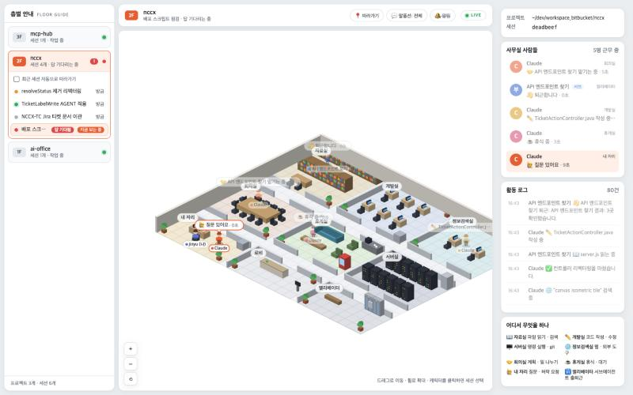
(nF), 브라우저 알림·차임.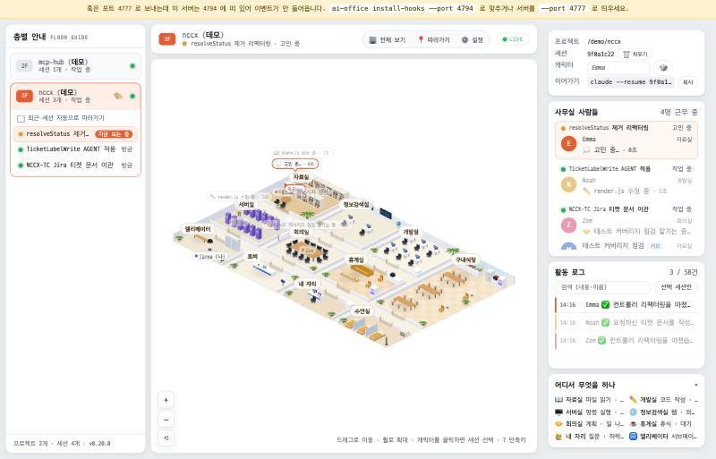
캐릭터와 외형, 이름
치비 스타일 아바타를 코드로 그립니다. 몸 종류(사람·로봇·고양이·곰), 머리 모양·색, 상의·하의·신발 색, 안경·모자·악세사리를 고르고 프리셋 10개가 있습니다. 역할(나·Claude·서브에이전트)별 기본 외형에 더해 세션마다 다른 외형과 이름을 줄 수 있고, 이름이 없는 세션은 별명 풀(Alex·Sam·Mia …)에서 자동으로 받습니다. 모두 브라우저 localStorage 에 저장됩니다.
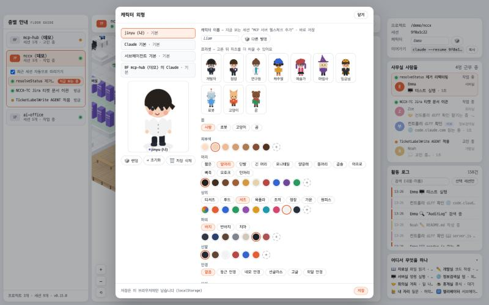
사무실 공간: 카페·테라스와 층별 다른 구조
업무 방 9개(자료실·개발실·정보검색실·회의실·휴게실·서버실·내 자리·로비·엘리베이터)에 휴식용 편의시설 두 곳이 더해집니다. 층마다 인테리어 프리셋(따뜻한 우드·쿨 그레이·민트·라벤더·샌드·파스텔)이 배정되고, 프리셋은 색과 함께 방 배치·편의시설을 정합니다. 층 행의 🎨 또는 ⚙️ 설정 → 층 인테리어에서 직접 고르면 서버에 저장되어 모든 브라우저가 같은 층을 봅니다.
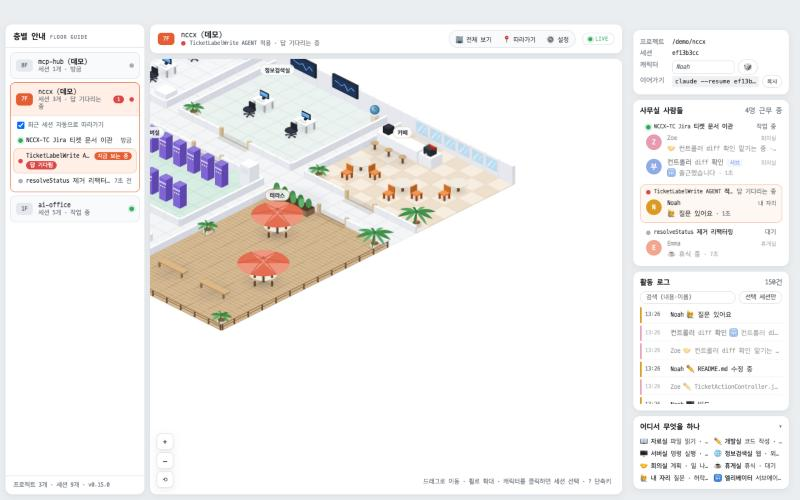
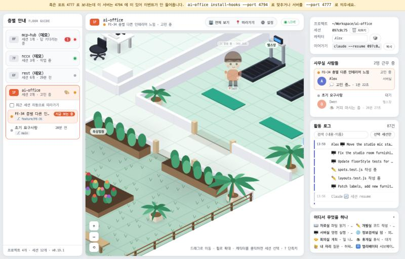
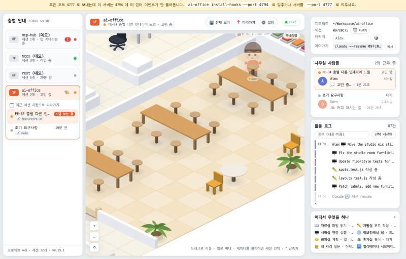
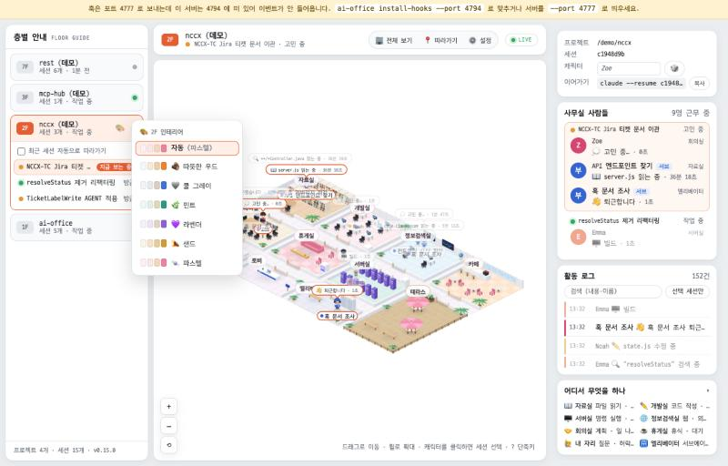
시간대 조명과 다크 모드
실제 시각으로 아침(06~10)·낮·저녁(17~20)·밤을 판단해 창문 유리, 테라스 데크, 실내 틴트가 바뀌고 밤에는 파라솔·난간에 조명 점이 켜집니다. 설정에서 시간대를 고정해 미리 볼 수 있습니다. 다크 모드는 UI 팔레트와 맵 팔레트를 함께 바꾸는 별개 축입니다.
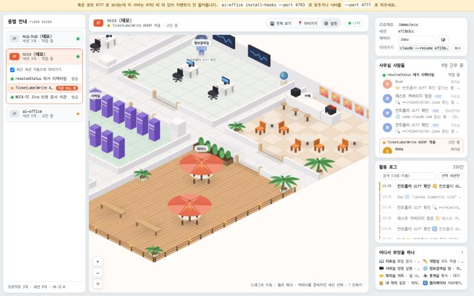
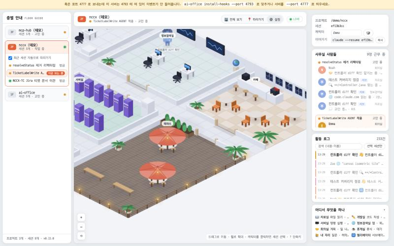
전체 보기 (건물 단면)
🏢 전체 보기(O)는 층을 높은 층부터 쌓아 한 화면에 보여 줍니다. 층마다 미니 사무실(그 층의 프리셋으로 한 번 캐시), 캐릭터 점, 세션 수·상태 라벨. 대기 중인 세션은 빨간 링이 맥동하고, 층을 클릭하면 그 층으로 갑니다.
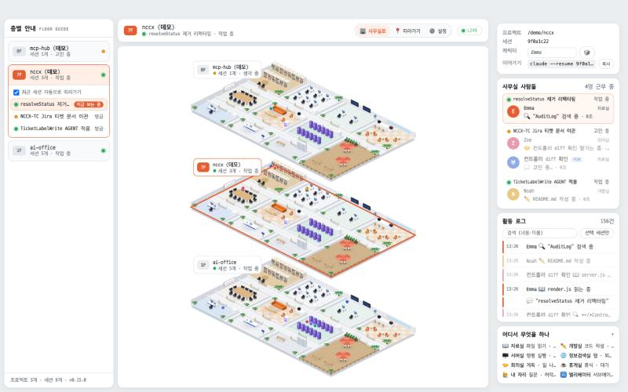
설정, 단축키, 알림
헤더에는 🏢 전체 보기 · 📍 따라가기 · ⚙️ 설정만 두고, 설정 팝오버에 말풍선 범위, 브라우저 알림, 대기 알림 소리(답 기다림만 / 실패·종료도), 생동감, 테마, 데모, 캐릭터 외형, 시간대 조명, 층 인테리어, 언어, 단축키 표를 모았습니다. 알림은 세션이 새로 "답 기다림"이 될 때 한 번 오고, 소리는 Web Audio 로 생성한 2음 차임입니다(파일 없음).
| 키 | 동작 | 키 | 동작 |
|---|---|---|---|
| 0~9 | 층 번호로 이동 | O | 전체 보기 |
| ← → | 이전·다음 층 | B | 말풍선 범위 |
| F | 따라가기 | S | 알림 소리 |
| A | 자동 따라가기 | T | 테마 |
| D | 데모 | / | 로그 검색 |
| Esc | 패널·모달·메뉴·전체 보기 닫기 → 검색 비우기 → 따라가기 해제 | ? | 단축키 표 |
영어 화면
⚙️ 설정 → 언어에서 한국어와 English 를 고릅니다(기본값은 브라우저 언어). 헤더·패널·설정·단축키 표, 캔버스의 방 이름표·말풍선·경과 시간, 전체 보기 라벨, 브라우저 알림이 모두 바뀌고, 서버가 한국어로 보내는 로그·말풍선도 패턴 규칙으로 번역합니다. 사용자가 쓴 세션 제목과 프롬프트, Claude 가 쓴 메시지는 쓴 그대로 둡니다. 언어를 바꿔도 새로고침이 필요 없습니다.
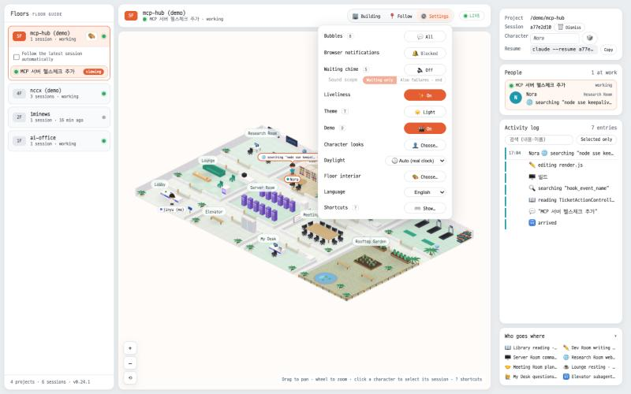
생동감, 데모, 작은 창
쉬는 캐릭터는 휴식 방 안의 명소(카운터·창가·벤치·난간)를 10~30초마다 옮겨 다니고 가끔 산책을 나갑니다. 새 이벤트가 오면 즉시 멈추고 해당 방으로 갑니다. 데모(scripts/demo.js)는 실제 훅 흐름을 /demo/ 층에 재현해 세션이 없어도 사무실을 볼 수 있게 합니다. 창이 좁아지면(1100px 이하) 좌·우 패널이 숨고 사무실만 남으며, 터치 기기에서는 두 손가락 핀치로 확대합니다.
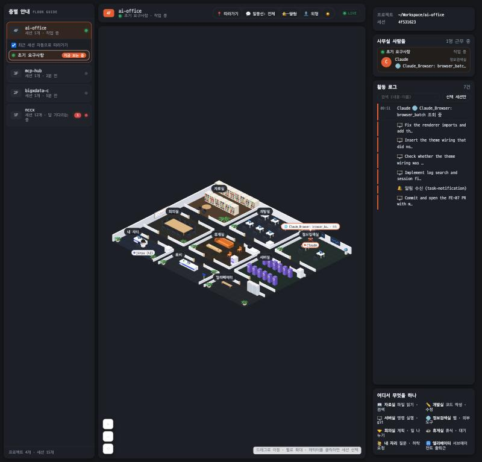
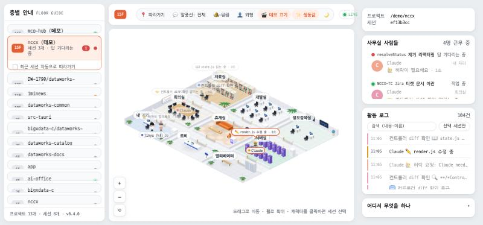
8. 데스크톱 앱 (macOS · Windows)
Tauri 2 앱(app/src-tauri/src/lib.rs)은 창 하나와 메뉴바(Windows 는 트레이) 메뉴를 가집니다. 메뉴는 열기 · 숨기기 · 항상 위 · 훅 다시 설치 · 업데이트 확인 · 업데이트 적용(다시 시작) · 종료입니다. 창을 닫으면 숨기기만 하고, 종료하면 서버도 함께 내려갑니다.
- 설치본과 훅. 첫 실행 때 앱 리소스의 서버 파일을
~/.ai-office/app에, 번들 Node(맥node, Windowsnode.exe)를~/.ai-office/node에 복사하고(버전이 바뀔 때만,.app-version스탬프) 그 경로로 훅을 등록합니다. 앱을 옮기거나 지워도 훅이 깨지지 않습니다. - 서버 수명. 내장 Node 로 서버를 자식 프로세스로 띄우고(
AI_OFFICE_WATCH_PARENT=1), 포트가 이미 열려 있으면 재사용합니다. 앱이 강제 종료돼도 서버가 2초 안에 스스로 끝납니다. Windows 에서는CREATE_NO_WINDOW로 콘솔 창을 띄우지 않습니다. - 자동 업데이트.
tauri-plugin-updater가 시작 10초 뒤와 6시간마다releases/latest/download/latest.json을 확인합니다. 새 버전이 있으면 백그라운드로 받아 서명을 검증해 설치해 두고, 메뉴바 제목에⬆를 붙이며 "업데이트 적용 (다시 시작)" 을 켭니다. 서명 공개키는tauri.conf.json에, 개인키는 GitHub Secrets 에 있습니다. - 메뉴바 표시. 아이콘은 창문·문이 뚫린 단색 건물 템플릿(
scripts/make-tray-icon.js가 의존성 없이 PNG 를 직접 인코딩)이라 라이트·다크 메뉴바에 맞춰 칠해집니다. 답을 기다리는 세션이 있으면 제목이🙋 n이 됩니다.
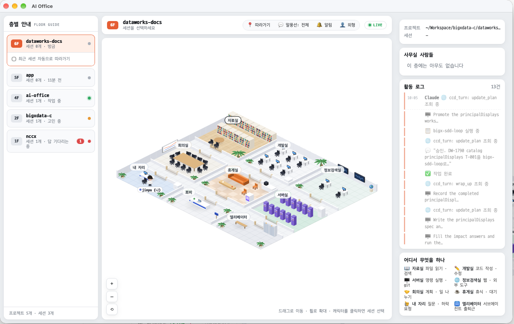
/api/state 를 폴링해 서버가 뜨면 웹 UI 를 엽니다.CLI(bin/ai-office.js)는 소스 파일 지문(경로·크기·mtime 해시)을 비교해 설치본을 갱신하고, git clone 에서 실행하면 소스를 그대로 씁니다. doctor 는 Node 버전, 훅 등록 수와 node·emit.js 경로 존재, 설치본 버전, 포트 사용 여부, 저널 크기(5MB 이상 경고), 훅 포트 일치를 점검합니다.
9. 배포 채널과 릴리스 파이프라인
| 채널 | 대상 | 설치 | 비고 |
|---|---|---|---|
| npm | Node 18+ 모든 OS (웹 버전) | npx claude-ai-office | 패키지 claude-ai-office. 실행 명령은 ai-office. 처음 이름 ai-office 는 기존 aioffice 와 비슷하다고 npm 이 거부해 바꿨습니다. 배포에는 계정 2FA 가 필수이고 prepublishOnly 가 테스트 100개를 먼저 돌립니다 |
| Homebrew cask | macOS Apple Silicon (앱) | brew install --cask cozyuj/tap/ai-office | tap cozyuj/homebrew-tap. auto_updates true(앱이 스스로 갱신), 서명 전이라 postflight_steps 의 run "/usr/bin/xattr", args: [..., "{{appdir}}/AI Office.app"] 로 격리 속성을 지웁니다(Homebrew 7 규칙) |
| Homebrew formula | macOS (웹 버전 CLI) | brew install cozyuj/tap/claude-ai-office | npm tarball 을 std_npm_args 로 설치, node 의존. brew test 는 ai-office doctor |
| GitHub Release | macOS · Windows (앱) | AI-Office-mac-arm64.dmg · AI-Office-windows-x64-setup.exe | 버전 없는 고정 이름 사본을 함께 올려 releases/latest/download/ 링크가 항상 최신을 받습니다. 버전 이름 파일·updater 아티팩트(.app.tar.gz·.sig)·latest.json 도 같은 릴리스에 |
| 자동 업데이트 | 설치된 앱 | 앱 메뉴 "업데이트 적용" | latest.json 의 플랫폼별 URL·서명으로 받아 검증 후 설치 |
| GitHub 소스 | Node 18+ | npx github:cozyuj/AI-office | 레포 공개 후 가능. npm 과 같은 동작 |
릴리스 한 번의 흐름
npm run bump:minor # package.json · app/package.json · tauri.conf.json · Cargo.toml 동시에
git tag vX.Y.Z && git push origin vX.Y.Z
└─ .github/workflows/release.yml
├─ build (macos-14, aarch64) fetch-node.js → npm test → tauri-action → DMG + .app.tar.gz(.sig)
├─ build (windows-latest, x64) fetch-node.js → npm test → tauri-action → NSIS setup.exe(.sig)
│ └─ 두 잡이 Release 생성·업로드 + latest.json, 고정 이름 사본 업로드
└─ smoke-windows setup.exe /S 설치 → 앱 실행 → /api/state 버전 = 태그
→ settings.json 훅(node.exe · emit.js) → 훅으로 SessionStart → 세션 도착
→ 앱 강제 종료 → 서버도 종료
npm publish # 2FA 브라우저 승인 (또는 --otp)
node scripts/update-homebrew.js --version X.Y.Z # DMG·npm tarball sha256 → tap 의 cask·formula 갱신 → push%LOCALAPPDATA%\AI Office, 서버 0.25.0 응답, 훅 → 서버 경로 OK, 앱 종료 후 서버 종료 OK). 화면이 실제로 어떻게 보이는지는 Windows 기기에서 확인할 일로 남아 있습니다.테스트 워크플로(test.yml)는 push 와 PR 마다 Ubuntu·Windows·macOS 에서 npm test 를 돌립니다. 워크플로 파일은 GitHub 토큰의 workflow 권한이 필요해 SSH 원격으로 푸시합니다.
10. 테스트와 성능
| 테스트 파일 | 다루는 것 |
|---|---|
state.test.js | 훅 12종 처리(11종 등록 + TaskCompleted), 서브에이전트 매칭, 휴식 방 배정, 자리 비움·퇴근 감지, TTL, 층 이름 충돌 |
pathfind.test.js · layouts.test.js · spots.test.js | 모든 레이아웃에서 슬롯·명소가 걷기 가능하고 그 방 안에 있음, 방은 문으로만 출입, 문 수 |
depth.test.js | AABB 비교 규칙, 위상 정렬, 공유 스프라이트의 평행이동 불변 |
journal.test.js · cli.test.js · hookport.test.js · bump.test.js · project.test.js | 저널 slim/replay/compact, CLI 설치·compact, 훅 포트 파싱, 버전 올림, git 루트 탐지 |
server.test.js · api.test.js | 실제 server.js 프로세스: 데모 훅 무시·저널 제외, 부모 SIGKILL 후 8초 안 종료, 세션 치우기 API |
smoke.test.js | 가짜 2D 컨텍스트(NaN 인자 감지)·최소 DOM 으로 프리셋×테마×시간대 60여 조합 그리기, 아바타 전 파츠, 캐릭터 400프레임, 패널 템플릿, 전체 보기, store |
avatar.test.js · names.test.js · floorStyle*.test.js · daylight.test.js | 외형 정규화, 별명 배정, 프리셋 배정 결정성, 시간대 판정 |
i18n.test.js | 번역 규칙, 사용자 글 보존, 언어 전환, index.html 의 모든 한글 문구가 사전에 있는지 |
CI test.yml · release.yml | 3 OS 테스트, 태그마다 맥·Windows 빌드 + Windows 설치 스모크 |
실측 (1600×900, zoom 0.83, 캐릭터 4)
| 항목 | 개선 전 | 개선 후 |
|---|---|---|
| 스프라이트 캐시 | 390장 개별 | 89 키 공유 |
| 캐시 메모리 (scale 1 / 2 / 3) | 15 / 62 / 139 MB | 5 / 21 / 48 MB |
| 정적 레이어 프레임 | 1.7 ms | 0.3 ms |
| 전체 프레임 (캐릭터 포함) | 약 1.4 ms, 전체 보기 1 ms, 층 전환 첫 프레임 6 ms 이하 | |
| 유휴 프레임 | 항상 60fps | 움직임 없으면 20fps |
| npm 패키지 (0.25.1) | 207 KB (압축) / 503 KB, 53 파일 | |
| 앱 배포 파일 (0.25.0) | 맥 DMG 41.6 MB · updater .app.tar.gz 42.8 MB · Windows 설치 파일 24.8 MB | |
11. 설계 결정과 로드맵
- 의존성 0. 훅마다 프로세스가 뜨므로
emit.js는 표준 모듈만 쓰고 1초 안에 끝나야 합니다. 서버도 같은 이유로 가볍게 유지했습니다. - 서버가 진실. 휴식 방, 인테리어 프리셋, 세션 제거처럼 "모든 브라우저가 같은 것을 봐야 하는" 결정은 서버에서 하고, 외형·이름·테마처럼 보는 사람의 취향은 브라우저에 둡니다.
- 이미지 없이 코드로 그리기. 플랫 벡터 스프라이트와 치비 아바타는 전부 Canvas 코드라 팔레트·레이아웃을 바꾸기 쉽고 패키지가 작습니다. 대신 캐시 전략이 중요해 종류별 공유 캐시를 넣었습니다.
- 층 = git 루트. cwd 가 바뀔 때마다 층이 늘어나는 문제를 피하고 worktree 를 한 층에 모읍니다.
- 잔류 방지. 앱·CLI 가 띄운 서버는 부모를 감시해 스스로 끝나고, 데모 이벤트는 저널에 남기지 않습니다.
- 번역은 틀만. 사전과 패턴 규칙으로 알려진 문구만 바꾸고, 그 안의 사용자 글은 건드리지 않습니다. 구절 치환을 쓰지 않는 이유는 세션 제목 같은 사용자 글을 망가뜨리기 때문입니다.
- 항상 최신 링크. 릴리스마다 버전 없는 이름의 사본을 올려 README·문서의 다운로드 링크를 고칠 필요가 없게 했습니다.
보류·다음
v0.25 에서 끝낸 것: 자동 업데이트, 맥·Windows CI 릴리스, Windows 설치 스모크, 영어 UI·README, npm 배포, Homebrew cask·formula.
- 맥 앱 서명·공증(Apple Developer 계정 필요). 지금은 우클릭 → 열기, Homebrew 는 격리 해제로 우회
- Windows 코드 서명(SmartScreen 경고 제거)과 실제 Windows 기기에서 화면 확인
- Intel 맥·Linux 앱 빌드 (지금은 웹 버전)
- Homebrew·npm 배포 자동화 (지금은 릴리스 뒤 스크립트·브라우저 승인)
- 아이패드 등 터치 기기 실기 확인